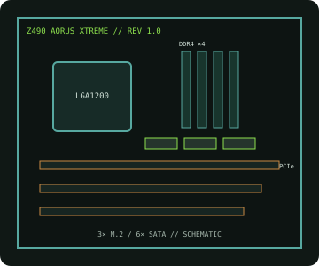

[ INDIVIDUAL COMPONENT // MOTHERBOARDS ]
GIGABYTE Z490 AORUS XTREME (rev. 1.0)
Intel Z490 flagship for the LGA1200 desktop platform, with DDR4, multi-GPU-capable PCIe slots, triple M.2 and dual wired networking.

IDENTIFICATION: Exact model/revision is Z490 AORUS XTREME rev. 1.0. Confirm the PCB silkscreen before downloading firmware or installing parts; do not use another Z490 AORUS variant's image.
Specifications
| Exact board / revision | GIGABYTE Z490 AORUS XTREME, rev. 1.0 |
|---|---|
| Socket / chipset / CPU | LGA1200, Intel Z490 Express; 10th Gen Intel Core desktop CPUs, with 11th Gen Core support only when the revision-specific CPU list and required BIOS include the exact processor. |
| Form factor | E-ATX, approximately 305 × 285 mm; verify chassis width and standoff clearance against the manual. |
| Memory | Four dual-channel DDR4 DIMM slots; 128 GB maximum listed capacity. Unbuffered non-ECC; XMP and overclocked speeds depend on CPU, DIMM population and BIOS QVL. |
| PCI Express | Three PCIe 3.0 x16-length slots; CPU lane sharing supports x16, x8/x8 or x8/x8/x4 configurations. Slot behavior depends on processor generation and installed devices. |
| Storage | Three M.2 sockets (PCIe 3.0 x4/SATA support varies by socket) and six SATA 6 Gb/s ports; review manual for shared lanes and disabled ports. |
| Networking / I/O | Aquantia 10GbE plus Intel 2.5GbE, Intel Wi-Fi 6/BT, dual Thunderbolt 3 USB-C ports and multiple USB 3.2 ports. Exact rear/front header map is in the manual. |
| BIOS / compatibility | Use the rev. 1.0 support download only. Check its CPU support list for exact processor stepping and minimum BIOS; 11th Gen CPU support is BIOS-dependent. |
Compatibility and service notes
LGA1200 alone does not establish CPU support: 10th Gen Core is the baseline; check GIGABYTE's rev. 1.0 CPU table and release notes before using an 11th Gen chip. Use DDR4 only. Confirm M.2/SATA sharing, PCIe lane allocation, case clearance and power connectors in the exact-revision manual.
Record the PCB revision and installed BIOS before service. Follow ESD precautions and avoid cross-flashing another model or revision.
Manufacturer sources
- GIGABYTE — Z490 AORUS XTREME rev. 1.0 product specificationsManufacturer specifications, board layout and documentation for this exact revision.
- GIGABYTE — rev. 1.0 CPU support, BIOS and manualsCheck exact CPU and minimum firmware version before installation.